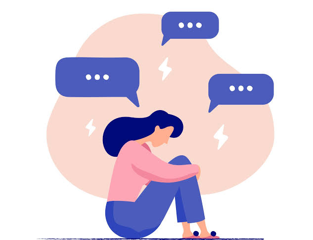
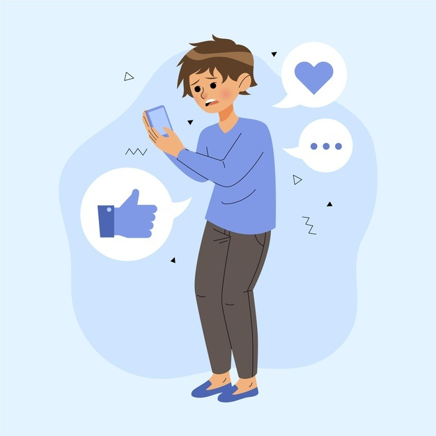
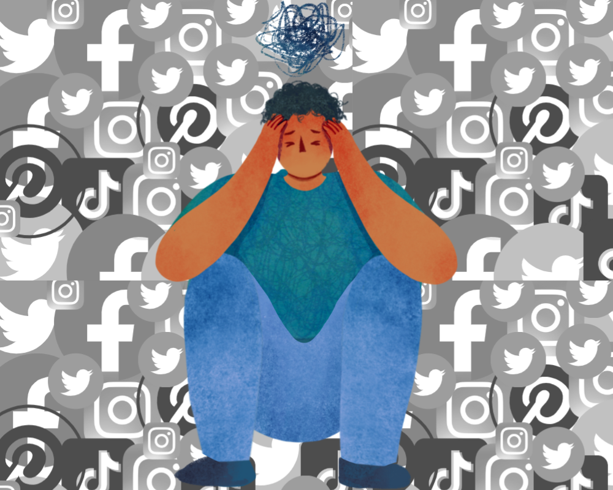

Komunikimi
Rrjetet sociale na ndihmojnë të qëndrojmë pranë njerëzve që i kemi larg. Mundësojnë kontakt të menjëhershëm me miqtë, familjarët apo njerëzit me interesa të ngjashme, pavarësisht largësisë gjeografike.
SHËNDETI MENDOR DHE JETA DIGJITALE
Si na lidhin me njerëzit, na sjellin informacion dhe si mund të ndikojnë në mirëqenien tonë.
Punuan: Ensari dhe Djelli
Eksploro projektin ↓HYRJE
Rrjetet sociale janë pjesë e përditshmërisë sonë. Ato na lidhin me njerëzit dhe na sjellin informacion, por gjithashtu mund të kenë edhe ndikime negative. Prandaj, është e rëndësishme të kuptojmë përfitimet dhe rreziqet e tyre.



NDIKIMI POZITIV
Ato ofrojnë mënyra të reja për të komunikuar, për të mësuar dhe për të ndarë interesat e talentet tona.
Rrjetet sociale na ndihmojnë të qëndrojmë pranë njerëzve që i kemi larg. Mundësojnë kontakt të menjëhershëm me miqtë, familjarët apo njerëzit me interesa të ngjashme, pavarësisht largësisë gjeografike.
Ndihmojnë në krijimin e grupeve mbështetëse për interesa të përbashkëta, si arti, sporti, teknologjia dhe edukimi.
Platformat si YouTube, Instagram dhe TikTok ofrojnë kanale edukative, udhëzues dhe materiale për zhvillim personal e profesional.
Informacioni rreth ngjarjeve botërore përhapet me shpejtësi, duke na mbajtur të informuar për atë që po ndodh rreth nesh.
Janë një hapësirë për të ndarë talentin tonë në fotografi, video, shkrim apo muzikë me një audiencë të gjerë.
Platformat si LinkedIn ose Instagram ndihmojnë në promovimin e bizneseve të vogla, ndërtimin e portofolit personal dhe gjetjen e mundësive të reja të punës.
NDIKIMI NEGATIV
Përdorimi i pakontrolluar mund të ndikojë te koha, gjumi, vetëbesimi dhe marrëdhëniet tona me të tjerët.
Algoritmet janë të dizajnuara për ta mbajtur përdoruesin sa më gjatë online. Kjo mund të ulë produktivitetin, të shpërqendrojë nga mësimet ose puna dhe të harxhojë kohë me vlerë.
Përdorimi i telefonit natën vonë ndikon negativisht në cilësinë e gjumit dhe mund të shkaktojë lodhje të vazhdueshme.
Postimet që shfaqin vetëm “jetën perfekte” të të tjerëve mund të nxisin ndjenjën e pamjaftueshmërisë, ankthin, xhelozinë dhe uljen e vetëbesimit.
Varësia nga reagimet, pëlqimet, shpërndarjet dhe komentet për të ndier vlerësim personal mund të krijojë presion psikologjik.
Anonimiteti ose distancimi fizik mund t'ua lehtësojë disa individëve përhapjen e komenteve fyese, ngacmimeve apo thashethemeve që dëmtojnë emocionalisht të tjerët.
Pavarësisht se janë mjete “sociale”, përdorimi i tepërt mund të zëvendësojë kontaktin e drejtpërdrejtë njerëzor dhe të krijojë ndjenjën e vetmisë.
PËRFUNDIM
Rrjetet sociale kanë si anë të mirë, ashtu edhe anë të keqe. Efekti i tyre varet nga mënyra se si i përdorim. Duhet të jemi të informuar, të kujdesshëm dhe t’i përdorim me masë, për të përfituar nga avantazhet dhe për të shmangur rreziqet.
Faleminderit për vëmendjen dhe mirëkuptimin!